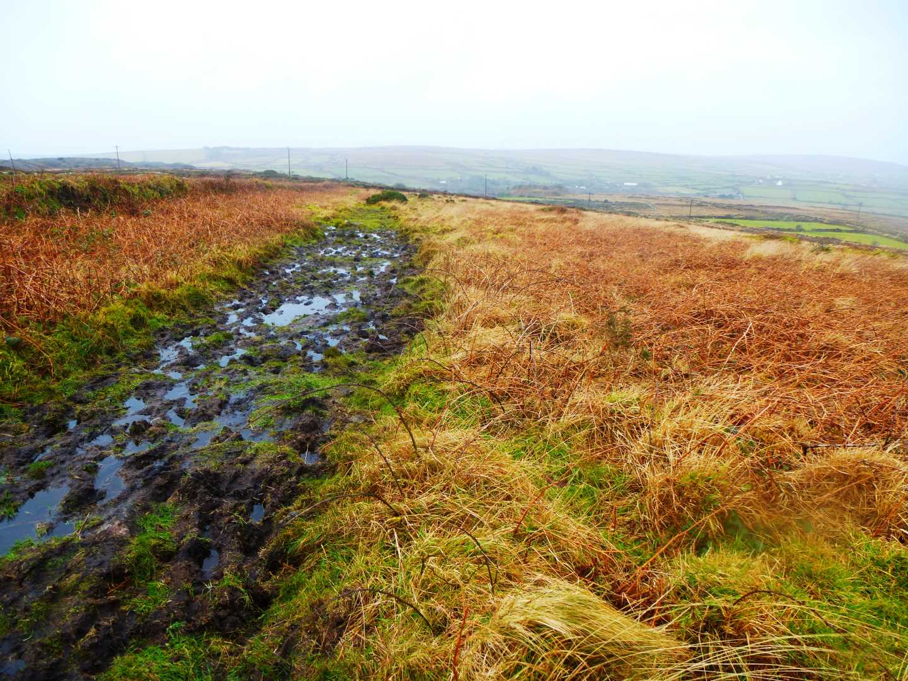
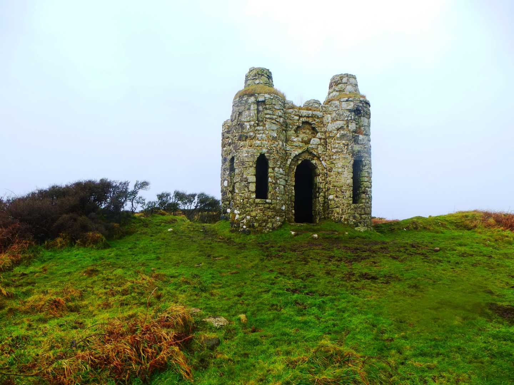

Start Ref: 4908 3418
End Ref: 4908 3418
Distance: 3 miles
Time: 2hrs
At the little hamlet of Castle Gate, on the B3311, is a substantial lay-by which is marked on the map as Parking. This is where my daughter and I left our car. This is our start and finish point.
From here, we walk a short distance back down the road heading towards Penzance, until we get to the T-Junction. On our right hand side (opposite the road coming up from Ludgvan) is a Bridleway, which we are going to take. This Bridleway is going to lead us in a general North Westerly direction and leads us alongside some Open Access land, before turning South West and then coming out alongside the Quarry. From here, the footpath has legally been re-routed, to follow the outer edges of the quarry. This actually makes the path easy to follow and relatively broad (if in some places very wet underfoot) as it takes us around Gulval Downs. Continue to follow the bridleway until we turn right (North East) as this path joins another coming up from the left.As we turn right here and start to head up a gentle incline towards Tonkins Downs, we get our first glimpse of the Folly that inspired me to want to do this particular walk.
After a short while we pass by two spaced apart Boundary Stones on our left – both bearing the initial `L` - before coming upon a large gate on our right which gives an upper entrance to the quarry. All this time we will feel that we are actually passing by the Folly, but bear with us. We leave this gate on our right and continue for a short distance until we come across a set of steps over the hedge on our right.
We climb over this hedge and follow the track up and to the South East until we get to the brow of the hill and the Ordinance Survey Trig Point and Roger`s Folly.
The trig point is at a height of 233m, and is actually one of the highest points around, and from here (on a clear day) you have views of The Mount, Newlyn, Trencrom Hill and Watch Croft (featured a few weeks ago). The interesting spot though is Roger`s Folly, built around c.1798 by Mr. John Rogers and is on the site of an Iron Age Fort. It makes for very attractive photographs and is a great place for a picnic.
Once our picnic is finished, we head back down the path to the hedge stile and turn right following the broad path in a North Easterly direction.
We pass through a kissing gate on our left, as the path to our right and over Trenowin Downs is now blocked, and at the end of this path (which passes several footpaths of on our left for a `Self Guided Route of Bakers Pit` - a nature reserve), we join a broad path which turns right (South East). This path leads us down past several farmhouses until after approximately ½ mile it brings us out on the road which if we turn right, will lead us back to our car.
Here, we need to take care, as the road is windy and narrow. Children and pets need to be on leads!!
We may want to call in on the beautifully named `Green Pig Tea Rooms` which we pass on this road. It was closed when we passed by, but may well be worth a visit.
I hope that you enjoy the walk.